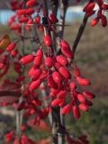

|

Листопадный, прямостоячий, моноподиально ветвящийся кустарник, высотой 1,5—3,0 м. Побеги гладкие,
ребристые или бороздчатые. Кора молодых побегов от серовато-желтоватой до желтовато-пурпурной,
кора перезимовавших побегов — серая. Стволы и побеги с многочисленными колючками листового происхождения.
Листья очередные, тонкие, перепончатые, редко полукожистые, длиной 3—6 см и шириной 1—2 см, эллиптические.Соцветия — простые,
15—25-цветковые повислые кисти, длиной 3—6 см. Цветки трехчленные с двойным околоцветником, диаметром 9 —10 мм.
Чашелистики обратнояйцевидные. Лепестков 6, они цельные, желтые, обратнояйцевидные, в основании с двумя нектарными железками.
Тычинок 6, расположенных двумя кругами. Пестик с сидячим рыльцем и верхней одногнездной завязью из одного плодолистика.
Плод — сочная продолговатая, ягодовидная однолистовка, длиной 9—10 мм (6), от пурпурного до темно-красного цвета,
обычно со слабым восковым налетом. Семена темно-коричневые, яйцевидные, мелкоморщинистые, длиной 5—6 мм.
Цветет в мае — июне; плоды созревают в конце июля или в августе.
Фотограф: Марина Ворошилова |